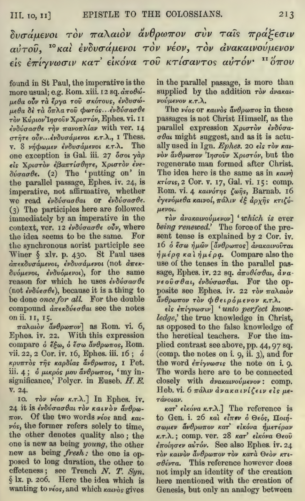

项目描述
基本框架
该项目的主体是对陈希增弟兄《属灵古典名著评介》的电子化。主要入口是index.html，剩余的bibliography.html是书目一览表，special_section.html是英语读者专栏，ch1.html到ch6.html则是第一到第六章。
bibliography.html里面的添加了许多超链接，一些超链接是指向互联网上现存的资源，另一些则是该项目在开发中的电子书资源。目前我的计划是，将该书目一览表中所有能找到的书籍资源电子化，并提供中、英、中英对照三版本（英文原文的识别由AI完成，对应中文的翻译同样由AI完成），并以超链接形式在bibliography.html里放置入口，方便读者浏览。
书籍资源电子化
书籍电子化是指，在bibliography.html里以超链接的形式添加所有对应公开书籍的电子化版本，方便读者阅读。由于原先的书籍大多是保存在Archive上的PDF书籍，因此总体操作流程包括
1 | 书籍底本(用户提供)PDF下载 → 基于AI扫描PDF并输出为YAML格式文件 → AI 翻译文件并完善YAML文件 → 基于YAML文件生成对应书籍网页版文件 → 用户手动在`bibliography.html`中插入网页版对应链接 → 本地LaTex编译导出PDF文件，包含中、英、中英对照三版本 |
因为目前有海量的书籍资源需要处理，所以进行如下标准化操作：
- 所有书籍的网页版展示遵循同一个模版。
- 该模版需要把书籍前言页、目录页、章节页等分散在不同的网页中。
- 排版应尽可能美观。
- 每一个具体内容页面应该用按钮在三种显示模式之间切换：原文、中译、原文/中译对照。
- 对照模式应原文一段、中译一段。
- 生成的网页版文件统一存放在当前目录下的books目录下，每本书单独一个文件夹。
- 生成网页版文件后，程序提供入口html文件地址。如 Bible
Synopsis 的入口文件地址为
./books/Bible_Synonpsis_J_N_Darby/entry.html。
- YAML 文件中同时储存书籍原文（可能为英语，也可能为其他语言）以及对应的中文翻译。原文与翻译是同一段条目下的不同分点，例如
1 | metadata: |
- 圣经注释类书籍有特定的格式，其常会在一页的顶部有两三行大字的希腊原文或希伯来原文，然后余下的小字内容是注释的内容。
- MinerU
或多模态AI会直接将这页内容按上下顺序识别出来。例如，针对图片

，识别结果为：
- MinerU
或多模态AI会直接将这页内容按上下顺序识别出来。例如，针对图片
1 | III. 10, 11] EPISTLE TO THE COLOSSIANS. 213 δυσάμενοι τὸν παλαιόννν ἀνθρωπον σὺν ταῖς πράξεσιν αὐτοῦ, 10 καὶὶὶ ἐνδυσάμενοι τὸν νέον, τὸννν ἀνακαινούμενον εἰςςς ἐπίγνωσιν κατ’ εἰκόνα τοῦ κτίσαντος αὐτόν. 1111 ὁπου found in St Paul, the imperative is the more usual; e.g. Rom. xiii. 12 sq... ἀποθώμεθαα οὖν τὰὰὰ ἔργα τοῦ σκότους,,, ἐνδυσάμεθα δὲ τὰὰὰ ὅπλα τοῦ φωτός...ἐνδύσασθε τὸνν Κύριοννν Ἰησοῦνν Χριστόν, Ephes. vi. 1111 ἐνδύσασθε τὴν πανοπλίαν with ver. 14 στήτεε οὖν...ἐνδυσάμενοι κτ.λ., I Thess. v. 8 νήφωμεννν ἐνδυσάμενοι κτ.λ. The one exception is Gal. iii. 2777 ὅσοι γὰρ εἰςς Χριστόννν ἐβαπτίσθητε,, Χριστόννν ἐνεδύσασθε. (2) The ‘putting on’ in the parallel passage, Ephes. iv. 24, is imperative, not affirmative, whether we read read read ἐνδύσασθαι or or or ἐνδύσασθε. (3) The particulars here are followed immediately by an imperative in the context, ver. 1222 ἐνδύσασθεε οὖν, where the idea seems to be the same. For the synchronous aorist particle see Winer § xlv. p. 430. St Paul uses uses uses ἀπεκδυσάμενοι,,, ἐνδυσάμενοι (notnotnot ἀπεκδυμένοι,,, ἐνδυμένοι), for the same reason for which he uses uses uses ἐνδύσασθε (notnotnot ἐνδύεσθε), because it is a thing to be done once for all. For the double compound compound compound ἀπεκδύεσθαι see the notes on ii. 11, 15. παλαιόννν ἀνθρωπον] as Rom. vi. 6, Ephes. iv. 22. With this expression compare compare compare ὁ ὁ ξέω,,, ὁ ὁ ζῶοοο ἀνθρωπος, Rom. vii. 22, 2 Cor. iv. 16, Ephes. iii. 16;;; ὁ κρυπτός τῆς καρδίαςςς ἀνθρωπος, I Pet. iii. 4;;; ὁ μικρός μουουου ἀνθρωπος, ‘my insignificance,’ Polycr. in Euseb. H. E. v. 24. 10. τὸν νέον κτ.λ.] In Ephes. iv. 24 it is is is ἐνδύσασθαι τὸν καινὸννν ἀνθρωπον. Of the two words νέος and καινός, the former refers solely to time, the other denotes quality also; the one is new as being young, the other new as being fresh: the one is opposed to long duration, the other to effetteness; see Trench N. T. Syn. § lx. p. 206. Here the idea which is wanting to νέος, and which καινός gives in the parallel passage, is more than supplied by the addition τὸννν ἀνακαινούμενον κτ.λ. The νέος or καινόςςς ἀνθρωπος in these passages is not Christ Himself, as the parallel expression expression Χριστόννν ἐνδύσασθαι might suggest, and as it is actually used in Ign. Ephes. 20 εἰς τὸν καινὸννν ἀνθρωποννν Ἰησοῦνν Χριστόν, but the regenerate man formed after Christ. The idea here is the same as in καινή κτίσις, 2 Cor. v. 17, Gal. vi. 15: comp. Rom. vi. 4 καινότηςς ζωῆς, Barnab. 1666 ἐγενόμεθα καινοί, πάλιν εξξξ ἀρχῆς κτιζόμενοι. τὸννν ἀνακαινούμενον] ‘which is ever being renewed.’ The force of the present tense is explained by 2 Cor. iv. 1666 ὁ ὁ ζῶοοο ἡμῶν [ἀνθρωπος]]] ἀνακαινοῦταιαιαι ἡμέρα καὶὶὶ ἡμέρα. Compare also the use of the tenses in the parallel passage, Ephes. iv. 22 sq... ἀποθέσθαι,,, ἀνανεοῦσθαι,,, ἐνδύσασθαι. For the opposite see Ephes. iv. 22 τὸν παλαιόννν ἀνθρωπον τὸν φθειρόμενον κτ.λ. εἰςςς ἐπίγνωσιν] ‘unto perfect knowledge,’ the true knowledge in Christ, as opposed to the false knowledge of the heretical teachers. For the implied contrast see above, pp. 44, 97 sq. (comp. the notes on i. 9, ii. 3), and for the word word word ἐπίγνωσις the note on i. 9. The words here are to be connected closely with with with ἀνακαινούμενον: comp. Heb. vi. 6 πάλιννν ἀνακαινίζειν εἰς μετάνοιαν. κατ’ εἰκόνα κτ.λ.] The reference is to Gen. i. 26 καὶ εἴπεννν ὁ ὁ Θεός,, Ποιήσαμεννν ἀνθρωπον κατ’ εἰκόνααα ἡμετέραν κτ.λ.; comp. ver. 28 κατ’ εἰκόναα Θεοῦῦῦ ἐποίησεν αὐτόν. See also Ephes. iv. 24 τὸν καινὸννν ἀνθρωπον τὸν κατὰὰ Θεόν κτισθέντα. This reference however does not imply an identity of the creation here mentioned with the creation of Genesis, but only an analogy between |
识别后应将这页顶部的希腊文的单独提取出来，和之前几页顶部的希腊文合并起来为1个段落，并放在所有对其注解的最前面。 2. AI 在整理的时候将本章所有的脚注提取出来，放在本章的末尾。因为一章的内容都应该放在一个html中。
- 生成pdf时基于AI整理得到的YAML，每本书籍利用本地LaTex生成三个PDF文档：原文、中译、原文/中译对照。
- 三类文档的LaTex模版应当固定。
- 目前平台是MacOS，相关的中文PDF字体等板式设置应该对应优化。
- 生成的文档应该尽可能美观。
- 对照文档的PDF格式应该要原文一段，中译一段。原文与中译之间的段间距小于该整段（原文+中译）与其他整段之间的间距。
- 生成的用于编译的tex文件应该放在单独的目录下，如 Bible
Synopsis
的入口原文tex文件地址为
./pdf_output/Bible_Synonpsis_J_N_Darby/original/main.tex，入口中文tex文件地址为./pdf_output/Bible_Synonpsis_J_N_Darby/translation/main.tex，入口对照tex文件地址为./pdf_output/Bible_Synonpsis_J_N_Darby/bilingual/main.tex，